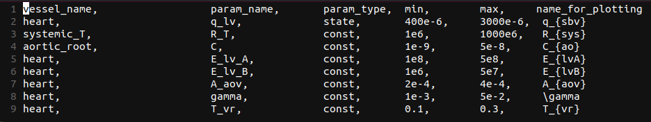
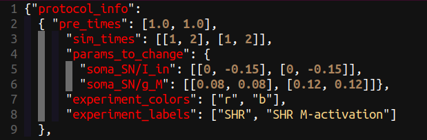
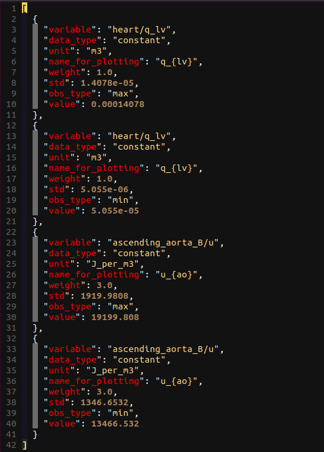
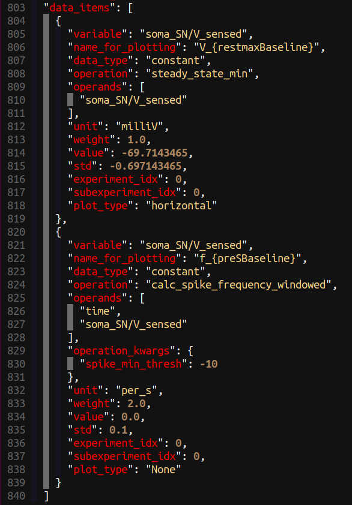
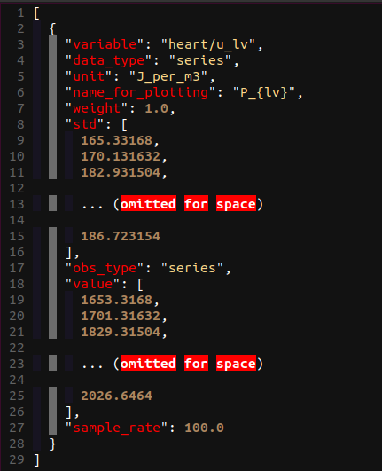
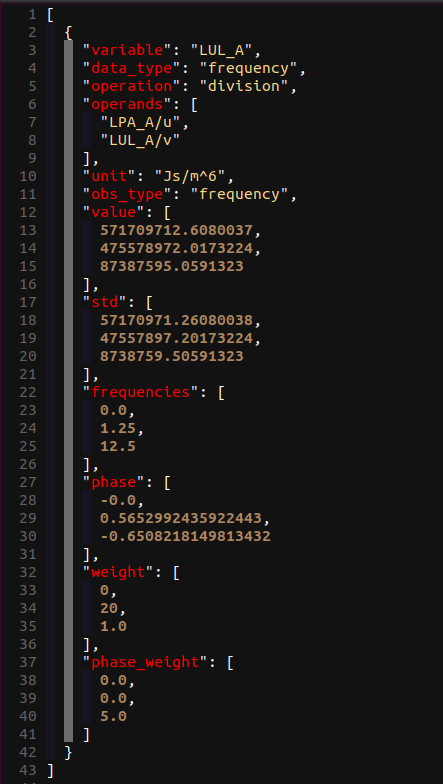
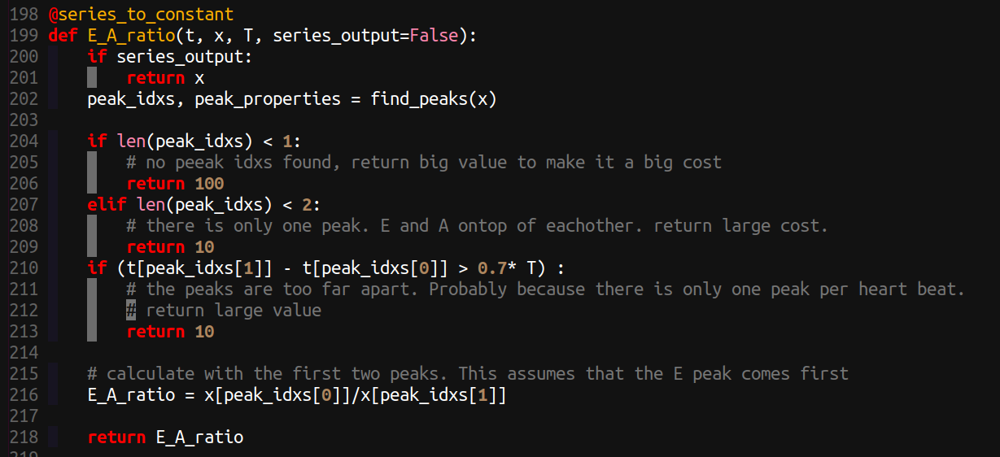
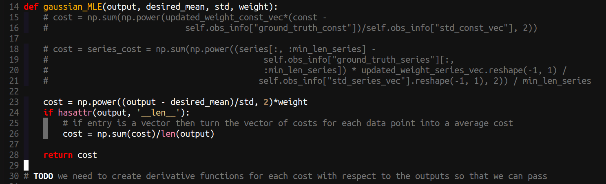

Parameter Identification
The parameter identification part of Circulatory_Autogen is designed to allow calibration of a model to experimental or clinical data. It implements an optimisation method to find the best fit parameters that give a minimal (local minima) error difference between the model output and the ground truth observables (experimental or clinical data or user specified). The creation of below two configuration files is necessary:
- params_for_id
- param id observables
Those files should be added to the [CA_dir]/resources directory (or your custom resources_dir). Proper names of the files are [file_prefix]_params_for_id.csv and [file_prefix]_obs_data.json, respectively. You can also set params_for_id_file in user_inputs.yaml if you want to use a non-standard filename.
Prerequisites
- A generated model (see Model Generation and Simulation).
param_id_obs_pathandparams_for_idfiles in your resources directory.- OpenCOR Python environment with MPI if running in parallel.
Creating params_for_id file
This file defines which parameters (constants and initial_states) within your model that you will vary in the parameter id process and their allowed ranges (prior distribution). Following is an example of the params_for_id.csv file.

The entries in the file are detailed as follows:
- vessel_name: the name of the vessel/module the parameter is in
- param_name: the name of the parameter in the cellml module (not including the "vessel_name" suffix that is included in the
[file_prefix]_parameters.csvfile). - param_type: "state" or "const"; whether the parameter is the initial value of a state or a const.
- min: The minimimum of the range of possible values (min of the uniform distribution).
- max: The maximum of the range of possible values (max of the uniform distribution).
- name_for_plotting: The name (latex format) that will be used when automatically potting comparisons with observables and predictions.
Note
param_type will be deprecated. All should be "const". Initial values that need to identified should be defined as constants within the cellml module.
Info
In the future we plan on including other types of priors rather than just uniform.
Creating param id observables file
This file defines the simulation protocol (protocol_info), and ground truth observables that will be used in the cost function for the parameter id optimisation algorithm. It also defines the measurement standard deviation, and weighting for each observable.
File path of the obs_data.json file should be defined as param_id_obs_path in [CA_dir]/user_run_files/user_inputs.yaml. This path can be absolute or relative to the location of your user_inputs.yaml.
Note
IMPORTANT: For creating obs_data.json files in python (strongly recommended over modifying the json by hand
you can use the helper class in src/utilities/obs_data_helpers.py. See src/scripts/example_format_obs_data_json_file.py for an example
that you can copy and change for your parameter identification task.
protocol info
The protocol info defines the numerical experiments you will be running. Here is an example for a sympathetic neuron calibration where the input current is changed from 0 to 0.15 pA after 1 second then simulated for 2 seconds with that input current. This was performed in two experiments, the first experiment with a M-type potassium conductance of 0.08 uS and the second experiment with an increased M-type potassium channel conductance of 0.12 uS.

For the protocol we define each experiment as each new full simulation that needs to be run. Each subexperiment is a section of an experiment with its own set of parameters. Subexperiments generally relate to different time periods where the inputs in the experiments that are being used for calibration have a change in value (e.g. change in drug concentration, change in stimulatiion frequency, change in applied force). The entries in the protocol info are:
- pre_times: The amount of simulation that is done before you want to compare to observables or plot (this part of the simulation is thrown away. This is mainly used to simulate for an amout of time to reach steady state or periodic state. shape = (number of experiments)
- offline_pre_time (optional): A single scalar, in seconds. Before any experiment runs, the solver performs one unlogged warmup integration for this duration, then stores the end state as the default state used when
reset_states()is called at the start of each experiment. Use this to separate a long steady-state or periodic warmup from the logged pre_times phase. Supported forCVODE_myokit,casadi_python, andpython(solve_ivp) backends; not available for OpenCOR. Example:offline_pre_time: 19.0withpre_times: [1.0]gives 20 s of total warmup before the first logged segment, equivalent topre_times: [20.0]withoutoffline_pre_time. - sim_times: The length in time of each subexperiment. shape=(number of experiments, number of subexperiments) -- Note: the shape isn't completely correct here, the number of subexperiments can be different for each experiment
- params_to_change: A dictionary where the key is a parameter name and the entry is the assigned value of that parameter in each (experiment_idx, subexperiment_idx).
- experiment_colors: The line color for the plots of each experiment.
- experiment_labels: The label for each experiment, which is used for plotting and naming plots.
data items
Examples of obs_data.json, data_item entries are shown in below figures for constant, constant with operation_kwargs, series, and frequency data types, respectively.




The entries in the data_item list in the obs_data.json file are:
- variable: This is the user defined observable name, it does not need to link to the cellml variable name.
- data_type: The format of the data. This can be "constant", "series", or "frequency" as shown above.
- unit: The unit of the observable.
- name_for_plotting: The name that will be in the automated plots comparing observable data to model output. (latex format)
- weight: The weighting to put on this observables entry in the cost function. Default should be 1.0
- std: The standard deviation which is used in the cost function. The cost function is the relative absolute error (AE) or mean squared error (MRE), each normalised by the std.
- value: The value of the ground truth, either a scalar for constant data_type, or a list of values for series or frequency data_types.
- obs_dt: required for series data types and not needed for constant or frequency. It defines the timestep for the observable series values.
Series ground truth from .npy files (t_path and value_path)
For large time-series observables you can store arrays in NumPy files instead of embedding long lists in the JSON. On load, Circulatory Autogen reads the files and fills in any missing value and obs_dt fields before calibration runs. You must still set std in the JSON (see below).
- t_path: Path to a
.npyfile containing the time vector (seconds). - value_path: Path to a
.npyfile containing the observable values. This is always the quantity that will be compared to the model .
Paths may be absolute or relative to the process working directory when parameter identification is started. If value is already present in the JSON, the file path should not be set;
Example data_item entry:
{
"variable": "P aortic root",
"data_type": "series",
"operands": ["aortic_root/u"],
"operation": null,
"unit": "Pa",
"weight": 1.0,
"std": 500.0,
"t_path": "/path/to/pressure_time.npy",
"value_path": "/path/to/pressure_values.npy",
"experiment_idx": 0,
"subexperiment_idx": 0
}
If obs_dt is omitted, it is estimated from the mean step in t_path. For std, provide either one positive number (applied to every sample in the series) or a list with one entry per sample (same length as value after load).
Warning
The dt or sample_rate fields are deprecated for series data. Use obs_dt instead.
Not to be confused with the dt for the model simulation outputs.
- operation: This defines the operation that will be done on the operands/variable. The possible operations to be done on model outputs are defined in [CA_dir]/src/param_id/operation_funcs.py and in [CA_dir]/funcs_user/operation_funcs_user.py for user defined operations.
- operation_kwargs: This is a dictionary of key word arguments (kwargs) and their values that links to the kwargs in the chosen python operation function.
- operands: The above defined "operation" can take in multiple variables. If operands is defined, then the "variable" entry will be a placeholder name for the calculated variable and the operands will define the model variables that are used to calculate the final feature that will be compared to the observable value entry/s.
- experiment_idx and subexperiment_idx: Optional indices to link a data item to a specific experiment/subexperiment in protocol_info.
Warning
obs_type: Deprecated in favor of operation.
prediction items (optional)
You can include a prediction_items list in obs_data.json to request additional model outputs to plot (not used in the cost function). Each entry includes:
- variable
- unit
- experiment_idx (optional; defaults to 0)
- name_for_plotting (optional)
Running external cellml models
Running cellml models that weren't generated with Circulatory_Autogen is also just as straightforward:
Simply set the file_prefix in your user_inputs.yaml file to the name of your cellml model <file_prefix>.cellml. Then set generated_models_dir to the path to the dir where your model subdir is and the subdir where the calibrated model will be generated. Make sure your cellml file/files are in a directory of the same name i.e.:
path/to/your/generated_models_dir/<file_prefix>/<file_prefix>.cellml
After calibration, the following directory will be created with your generated model:
path/to/your/generated_models_dir/<file_prefix>_<obs_file_name>/
Note
Currently the generated model needs to be run in newer OpenCOR with the LibOpenCOR backend because a CellML 2.0 model is generated.
Creating your own operations
To enable flexibility we allow you to create your own user-defined operation functions in python to extract features from your model outputs and compare to data in the calibration.
Available operation functions can be found in src/param_id/operation_funcs.py and in the file made for adding your own operation functions in funcs_user/operation_funcs_user.py.
Here is an example of an operation function for calculating the ratio of the two peaks (used for mitral valve flow).

Note:
- kwargs can be used and defined for each entry in your obs_data.json with
operation_kwargs, see above. if series_outputis needed to return the variable trace for plotting.- A more elegant method of returning a high cost if the observable can't be calculated is being discussed.
Creating your own cost functions
To allow even more flexibility, we also allow users to define their own cost functions (or likelihood functions). These can be found at funcs_user/cost_funcs_user.py.
An example for the maximum likelihood estimator for gaussian noise (equivalent to weighted mean squared error) is:

Note:
- Currently there are no kwargs for user defined cost functions. But there will be: see issue
Solver
Before doing calibration, a solver for the model needs to be chosen
- solver defines the solver family. Options depend on
model_type:- CellML (
model_type: cellml_only):CVODEdefaults toCVODE_myokit(Myokit). UseCVODE_opencorexplicitly if you want the OpenCOR backend instead. - Python (
model_type: python):solve_ivpwithsolver_info.methodset toRK45,BDF, etc. - CasADi Python (
model_type: casadi_python):casadi_integratorwithsolver_info.methodset tocvodes,idas,collocation, orrk. - C++ (
model_type: cpp):CVODE,RK4, orPETSC.
- CellML (
- solver_info defines settings for the chosen solver:
- dt_solver: solver time step (for CVODE this sets
MaximumStepwhen provided) - MaximumStep: maximum step size for adaptive solvers
- MaximumNumberOfSteps: maximum number of substeps before stepping
- method: any method for
solve_ivporcasadi_integrator, e.g.RK45,BDF,cvodes, etc.
- dt_solver: solver time step (for CVODE this sets
Parameter Identification Settings
To run the parameter identification we need to set a few entries in the [CA_dir]/user_run_files/user_inputs.yaml file:
- param_id_method: this defines the optimisation method we use. Currently supported methods are:
- genetic_algorithm: Genetic algorithm optimizer (default, well-tested)
- CMA-ES: Covariance Matrix Adaptation Evolution Strategy using Nevergrad (supports parallel execution)
- bayesian: Bayesian optimization using scikit-optimize (deprecated, untested)
- sp_minimize: Gradient-based optimizer
- pre_time: this is the amount of time the simulation is run to get to steady state before comparing to the observables from
obs_data.json. IMPORTANT: THis is overwritten by the pre_times within the obs_data.json file, see the next section. - sim_time: The amount of time used to compare simulation output and observable data. This should be equal to the length of a series observable entry divided by the "sample_rate". If not, only up to the minimum length of observable data and modelled data will be compared.
- dt: The output (sample) time step for model outputs
- solver_info.dt_solver: The solver time step for CVODE (sets MaximumStep when provided)
- solver_info.MaximumStep: The CVODE maximum step size if dt_solver is not provided
- param_id_obs_path: the path to the
obs_data.jsonfile described above (absolute or relative to youruser_inputs.yaml). - ga_options: Legacy dictionary (deprecated, use
optimiser_optionsinstead):- cost_type: "AE" or "MSE" for absolute error or mean squared error.
- num_calls_to_function: How many forward simulations of pre_time+sim_time will be run in the optimisation algorithm.
- cost_convergence: If the cost value is lower than this threshold then the calibration run is complete.
- max_patience: If the cost doesn't improve for this number of simulations, then calibration is complete (we assume that the cost has converged to the global minima or can't get out of a local minima).
-
Note: For backwards compatibility, entries in
ga_optionsare automatically merged intooptimiser_optionsif not already present. It is recommended to useoptimiser_optionsinstead. -
optimiser_options: Dictionary for optimizer-specific options (preferred over
ga_options). Common options shared across optimisers:- num_calls_to_function: Maximum number of function evaluations (default: 10000)
- cost_convergence: Convergence tolerance for cost (default: 0.0001)
- max_patience: Maximum patience for convergence (default: 10)
- cost_type: Cost function type (e.g., 'MSE')
CMA-ES specific options:
- sigma0: Initial standard deviation for CMA-ES (optional, default: 0.2 of parameter range)
- Note:
- The number of parallel workers is automatically determined from the number of MPI processes
- Initial parameter values are automatically loaded from
{file_prefix}_parameters.csv
sp_minimize specific options:
- do_ad: Boolean value to determine whether to use automatic differentiation for gradient calculation. If it's set to False, gradients will be estimated using finite difference approximation.
-
ga_options: Legacy dictionary for optimization options. For backwards compatibility, entries in
ga_optionsare automatically merged intooptimiser_optionsif not already present. It is recommended to useoptimiser_optionsinstead.
Choosing an Optimization Method
Genetic Algorithm (genetic_algorithm)
- Pros: Well-tested, robust, handles non-smooth cost functions well
- Cons: Can be slower, requires more function evaluations
- Best for: Complex, multi-modal optimization problems, when you have many function evaluations available
CMA-ES (CMA-ES)
- Pros: Efficient gradient-free optimization, supports parallel execution, good convergence properties
- Cons: Requires Nevergrad package (
pip install nevergrad) - Best for: Smooth optimization landscapes, when you want faster convergence with parallel execution
Example configuration for CMA-ES:
param_id_method: CMA-ES
optimiser_options:
num_calls_to_function: 10000 # shared option
cost_convergence: 0.001 # shared option
sigma0: 0.1 # CMA-ES specific (optional, initial standard deviation)
# Note: Initial parameter values are automatically loaded from {file_prefix}_parameters.csv
Gradient-based Optimizer (sp_minimize)
- Pros: Efficient gradient-based optimization, fast convergence
- Cons: Can get stuck in local minima
- Best for: Smooth optimization landscapes, when you want faster convergence
Note: For backwards compatibility, ga_options can still be used and will be automatically merged into optimiser_options.
Running parameter identification
After creating the params_for_id file and the param id observables file, and configuring the above settings, run the parameter identification using the below command.
./run_param_id.sh <NUM_CORES>
Following a successful parameter id process, the model with updated parameters can be generated with:
./run_autogeneration_with_id_params.sh
Note
IMPORTANT: After running the calibration, you should plot the simulation outputs vs the ground truth to analyse the fits!! This can be done with:
./plot_param_id.sh
The generated models will be saved in generated_models/ and plots will be saved in param_id_output/.
Full model time-series dumps (all states and variables) are written as NumPy archives in the param_id output directory:
all_outputs_with_best_param_vals_exp_{i}.npz— written when calibration completes successfully.all_outputs_with_best_param_vals_exp_{i}_plot.npz— written at the start of everyplot_outputs()call. Use these to recover trajectories after an interrupted run as long asbest_param_vals.npyexists in the same output folder.
If you already have a model and do not want to run autogeneration, use:
./run_param_id_without_autogen.sh <NUM_CORES>
Expected outcome
You should have a calibrated model in generated_models/[file_prefix]_[obs_file_name]/ and plots in param_id_output/.
Troubleshooting
- If you see
params_for_id_path ... does not exist, confirmparams_for_id_fileorfile_prefixand yourresources_dir. - If you see
obs_dt is required for series entries, addobs_dtto each series data item inobs_data.json. - If MPI errors occur, ensure OpenMPI/MPICH is installed and
mpi4pyis available in the OpenCOR environment.